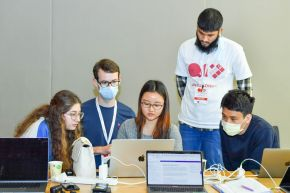
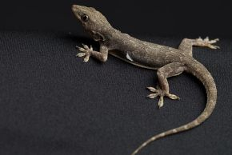
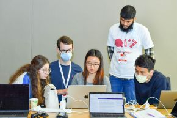
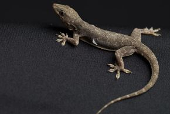

Ten NYU Abu Dhabi Initiatives that uphold the lasting humanitarian legacy laid out by the UAE’s Founding Father.
NYU Abu Dhabi Launches Four New
Areas of research include climate and the environment, artificial intelligence and robotics, smart engineering materials, and quantum and topological systems.
Volunteering to Empower the Younger Generation
First year student became interested in working with children after a supportive teacher transformed his life in school.
Featured Research
Research at NYU Abu Dhabi deepens our understanding of the world and ourselves.
 



New research may offer an explanation to the reasons behind the underrepresentation of women in fields that are perceived to prize raw intellectual talent or “brilliance.”
NYU Abu Dhabi’s International Hackathon for Social Good will focus on quantum computing technology set to solve some of the world’s greatest challenges.
Researchers present the first-ever biophysical model of lizard tail autotomy.
Researchers have discovered a new set of waves in the Sun that, unexpectedly, appear to travel much faster than predicted by theory.
Our Stories
From students, faculty, and staff, read the latest stories about our dynamic and diverse community.

For Milena Baghdasaryan, it is traveling, writing, and learning new languages.
Karol Tolpa’s serendipitous discovery of NYUAD’s master’s program which led to his subsequent application became one of the best decisions he has made.
When Lolowa AlKindi looks overhead, she knows out in the vastness holds a miniature satellite that she helped build.
After a year and a half of online university, Maryam Alshehhi wanted to take on an internship as an opportunity to grow personally and professionally.
Upcoming Events
NYU Abu Dhabi offers a lively forum for the exchange of ideas with local audiences as well as worldwide academic and research communities.
March 1 - June 12, 2022
Ramin Haerizadeh, Rokni Haerizadeh, Hesam Rahmanian are known for their immersive, surreal projects, performances, paintings, and animations, which have exhibited internationally.
May 5, 2022
This keynote lecture is dedicated to the fascinating history of the Qur’an on the Iberian Peninsula and introduce us to a world in which Arabic books and Arabic speakers who were familiar with the Qur’an and its exegesis coexisted with Christian scholars.
May 9, 2022
Join this conversation with artists including members of Kid Koala’s team and graphic designer, illustrator and artist, Khalid Mezaina as they discuss how their fans became ambassadors of their work and support them throughout their careers.
Events
Innovation & Entrepreneurship
© New York University Abu Dhabi
Digital Privacy Statement Accessibility General Feedback